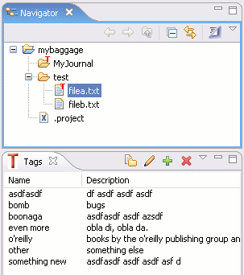

Introduction
 The Resource Tagger Plug-in adds tagging functionality to Eclipse such that resources may be tagged similar to the content tagging in Del.icio.us and Gmail. The tagged resources may then be managed, searched, filtered, or otherwise operated on by the tags they are associated with.
I started the Tagger plug-in as the prelude to an Eclipse RCP project that I was starting to work on. One of the features I was looking for at the time was a means of grouping disparate data items across multiple plug-ins and over multiple projects. I was surprised that no such plug-in already existed, what with all the tagging arising in pretty much every other type of application. There was one project that was similar, TagSEA, but they had taken an in-code tagging approach where I was looking for something on the resource-level.
I started coding up some proof-of-concept ideas and realized how much fun plug-in development could be. I also began to realize that this plug-in could be very useful in development for marking files across mulitple projects, so I created a SourceForge project and started working on the code in my spare time. There have been a few bumps along the road, but overall things have gone pretty well.